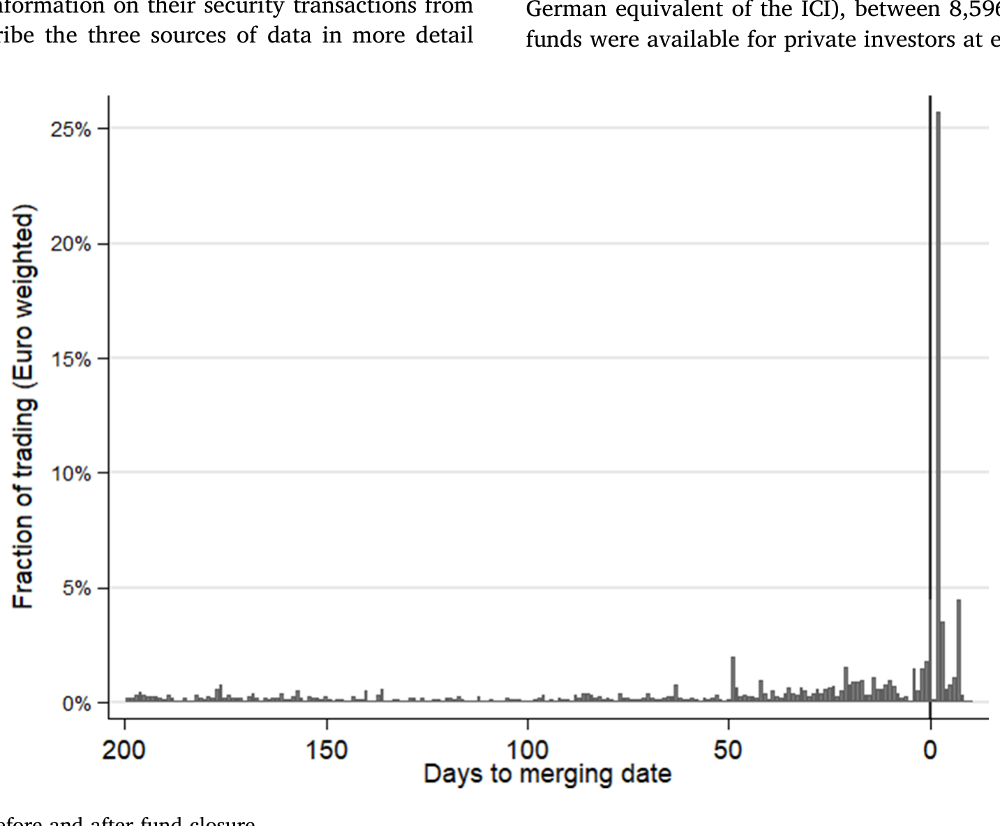
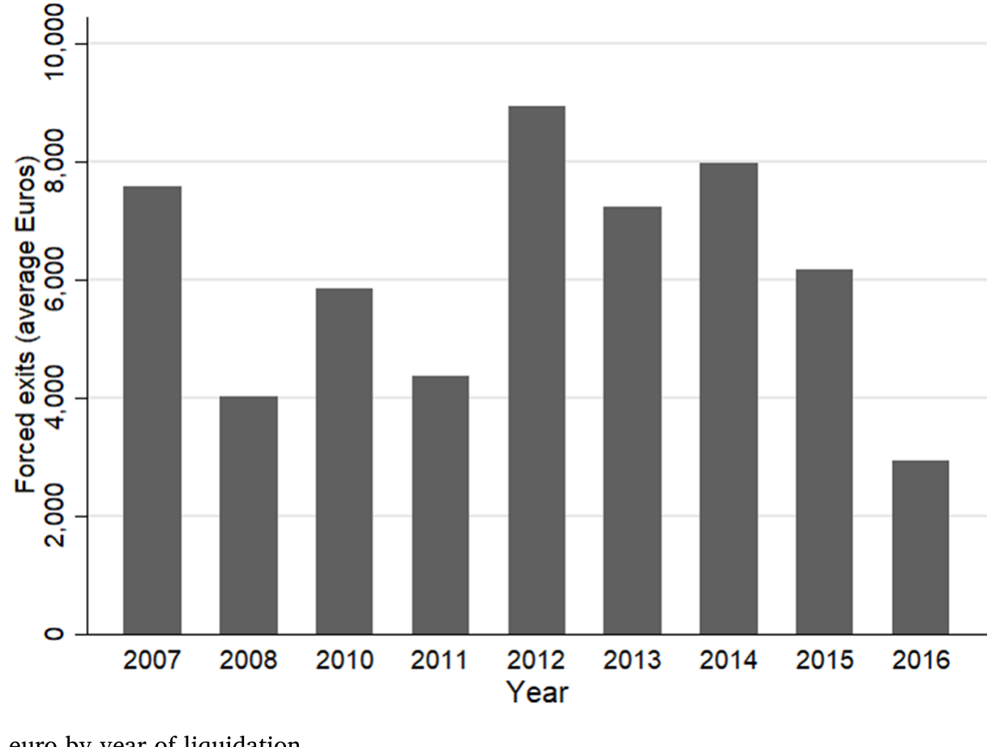
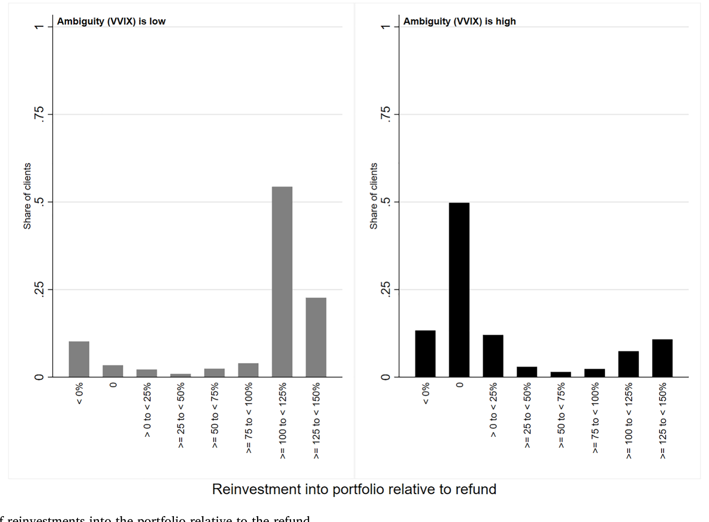
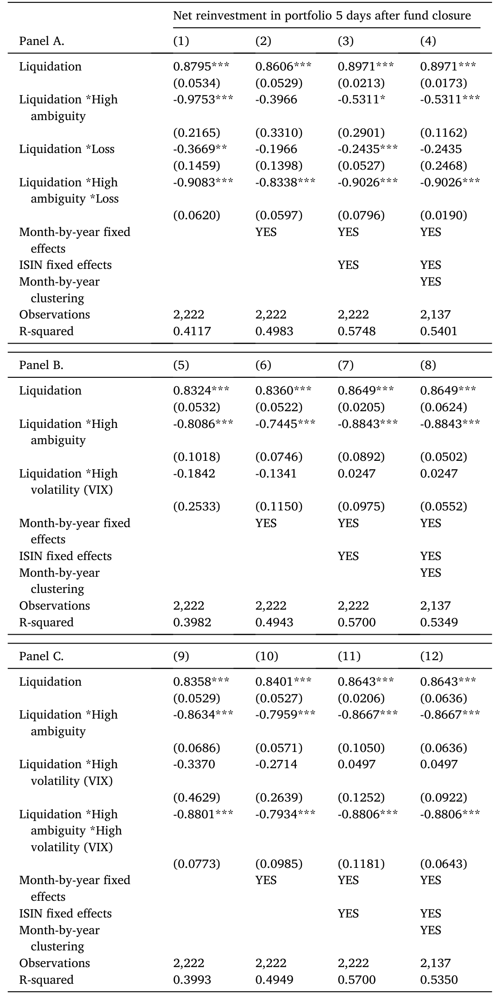
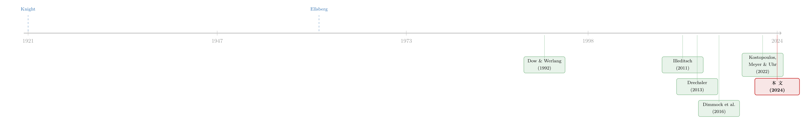

算不清的那一天：当「不确定」把投资者钉在了原地
本文读的是 Meyer & Uhr (2024, Journal of Financial Economics)：当一只基金被强制清算、把钱原封不动退还给投资者时，他们会不会再投回去，竟然取决于「退款到账那一天」市场有多「算不清」。在模糊性低的日子里，投资者把退款的 87% 重新投了出去；而在模糊性高的日子里，这个比例几乎是 0%。钱没被花掉，也没被转走——它就那么躺在活期账户里，直到大约半年后，这股「惰性」才慢慢消退。
1 一个被动塞回手里的选择
先想象这样一个场景。
你买了一只基金，已经持有了快两年——论文里中位数投资者是在基金清算前 687 天买入的。有一天，你打开账户，发现基金没了，一笔钱躺在了你的现金账户里，大约是你整个组合市值的 10%。你没卖，你也没接到任何电话或邮件通知；只是基金公司在某份半年报或年报的角落里宣布要清盘，然后到了某一天，就把净值 (net asset value, NAV) 折现退还给了你。
现在，问题来了：这笔钱，你会怎么处理？
按照最朴素的金融直觉，答案近乎显然。既然你原本愿意持有这只基金、组合也接近你想要的样子，那么这笔被动退回来的钱，理应被你再投资 (reinvestment) 进一只风险相近的证券——把组合恢复到原来的状态。这笔退款既没有改变你的净财富，也不是你主动卖出、为某项消费做的准备。它就像有人把你口袋里的一张钞票拿出来、又放回去，理论上你不该有任何反应。
但 Meyer 和 Uhr 发现，投资者的反应，取决于一件和这只基金、和他个人财务状况都毫不相干的事情：退款到账那一天，整个市场有多「算不清」。
这就是全文的张力所在。一个本该是「机械复位」的动作，却被一个外生的、转瞬即逝的宏观情绪状态，硬生生掰成了两副面孔。
2 风险，还是模糊？
要讲清楚这篇文章，得先把两个常被混为一谈的概念分开。
第一个是风险 (risk)：未来各种结果的概率是已知的。掷一枚公平硬币，正面反面各 50%——这是风险。第二个是模糊 (ambiguity)，也叫奈特不确定性 (Knightian uncertainty)：未来结果的概率本身就是未知的（Knight, 1921）。模糊可能来自模型不确定（你担心自己用错了模型），也可能来自参数不确定（你担心估出来的参数是错的）。
这个区分为什么要紧？因为一个标准的贝叶斯期望效用决策者，会把这两者一视同仁地当作风险来处理——只要平均风险不变，他就不该改变决策。但 Ellsberg (1961) 那个著名的思想实验告诉我们：人不是这样的。面对一个「不知道红球黑球各有多少」的罐子，大多数人会本能地回避，哪怕它的期望和一个「红黑各半」的罐子完全一样。这就是模糊厌恶 (ambiguity aversion)。
一句话记住它们的差别：风险是「我知道这把骰子有几个面」，模糊是「我连这把骰子有几个面都不确定」。Ellsberg 的洞见是——人对后者的厌恶，远超前者。
接着，一个自然的问题是：模糊厌恶会让投资者做什么？理论早有预言。Dow 和 Werlang (1992)、Garlappi、Uppal 和 Wang (2007)、Peijnenburg (2018) 这条线说，模糊（厌恶）会压低风险资产的配置、甚至导致不参与市场；而 Epstein 和 Wang (1994)、Illeditsch (2011) 这条线则给出了一个更微妙的预言——组合惰性 (portfolio inertia)：当模糊上升时，投资者会僵在原地，既不买也不卖。
理论很丰满。可怎么在真实世界里干净地把模糊和它的后果识别出来？这恰恰是经验研究最难的地方——你既要找到一个外生变动的模糊冲击，又要找到一群本该有所行动、却因模糊而僵住的投资者。
3 识别策略：把「该不该投回去」交给一场清算
这篇论文最漂亮的一步，是把识别建立在强制基金清算 (forced fund liquidation) 这个准自然实验上——方法论上沿用了 Meyer 和 Pagel (2022)。
它的妙处在于三个「外生」的叠加：
首先，退款本身是外生的。 基金清盘是基金公司的决定（往往因为规模太小、需求不足或业绩无望），与投资者个人无关。投资者拿到的就是清算日的 NAV，这笔钱不改变其净财富，也独立于他的消费计划——因为他根本没料到、也没主动发起这场卖出。超过 75% 的受影响投资者，是在清盘一年多以前就买入了这只基金的。
接着，「意外性」是外生的。 关键在于德国的制度细节：清盘必须提前公告（德国注册基金提前半年，卢森堡注册提前四周），但公告只登在基金的半/全年报或一则新闻稿里，基金公司和银行不会给投资者发personal的邮件或信件。于是 Figure 2 给出了一个决定性的证据：在清盘前后很长的窗口里，投资者几乎没有任何交易，直到退款真正到账（结算约需两天）、他们在账户里看见这笔钱，交易才骤然发生。这说明退款对绝大多数人是突如其来的惊讶。

Figure 2: Trading behavior before and after fund closure
最后，也是最关键的一步——「到账那天的模糊水平」是外生的。 既然公告早在四周乃至半年前发出、且投资者根本没注意到，那么退款恰好落在哪一天、那一天市场恰好有多模糊，对投资者和基金公司都是无法预料、无法操纵的。于是，被「高模糊日」清算出局的投资者，和被「低模糊日」清算出局的投资者，除了到账那天的模糊水平不同之外，其余高度相似。这就构成了一个近乎随机的分组。
那么，模糊本身怎么度量？作者追随 Bali 和 Zhou (2016)、Baltussen、van Bekkum 和 van der Grient (2018)、Bollerslev、Tauchen 和 Zhou (2009) 等人的做法，采用波动率的波动率 (volatility of volatility, vol-of-vol)，具体是 VVIX——VIX 的 30 天隐含波动率，即标普 500 的「波动率的波动率」。这条思路的理论源头是 Drechsler (2013)：他用一个代表性代理人的禀赋经济，证明了模型不确定性会在指数期权中生成水平与时变特征；而 VVIX 恰恰非常接近 Epstein 和 Ji (2013) 所说的「波动率的模糊」。直觉上，VVIX 越高，意味着市场对「波动率到底该是多少」的分歧越大。作者选它的现实理由也很硬：它市场化、无模型、前瞻、且每日可得——这一点对需要精确到「到账那一天」的研究至关重要（相比之下，区域上更贴近德国的 V-VSTOXX 要到 2010 年 3 月才有数据）。
4 数据：一家德国券商的十八年
把上面的拼图拼起来，需要三套数据：
- 基金清盘数据：由德国基金业协会 BVI（相当于美国的 ICI）提供 2006–2016 年间全部基金清盘与合并记录，含 ISIN、清盘日、是否退款给投资者等。
- 模糊度量：来自 Refinitiv Datastream 的
VVIX。 - 券商客户数据：一家德国券商
113,000名客户在1999–2016年间带时间戳的证券交易与持仓、以及活期、储蓄、结算账户的余额与流水。
把它们交叉后，最终样本是 18,836 名持有了「最终被强制清算的基金」的投资者，其中 1,958 名直接经历了清盘事件；对应 180 只被完全清算并退款的基金、2,222 次清盘事件。观察单位是投资者×事件。值得一提的是，被清算的退款平均约 €7,137（中位数 €4,020，多数落在 4,000–8,000 欧元之间），约占客户组合的 10%——足够「显眼」，让人不可能视而不见。
Figure 3 展示了历年强制清算的平均退款规模。

Figure 3: Forced fund liquidations in euro by year of liquidation
5 主要结果：87% 对 0%
现在揭晓那个反转。
净再投资。 作者先看退款后的净再投资比例。结果是：如果退款发生在低模糊日，投资者把退款的 87% 重新投了出去；而如果发生在高模糊日，再投资比例接近 0%。注意，这里不是「少投一点」，而是几乎完全僵住——这正是 Illeditsch (2011) 所说的组合惰性。这个结论在清盘后 5 天和 30 天两个窗口都成立。

Figure 4: Fraction of reinvestments into the portfolio relative to the refund
那钱去哪了？ 既然没有再投资，钱是不是被花掉了、或者转出了银行？都不是。作者顺着「组合惰性」的理论往下查，发现这笔没被投出去的钱，就静静躺在投资者的现金账户里——既没有转出本行，也没有取现。这是对「惰性」最干净的佐证：不是消费冲动，不是流动性需求，就是单纯地「不动」。
它会持续多久？ 这是全文最耐人寻味的一笔。高模糊本身是转瞬即逝的——平均而言，清盘后的 VVIX 只需约 8.6 天（中位数 3 天）就回落到低位。可投资者的惰性，却远比这股冲击活得长。把窗口拉到 3 个月，高模糊日出局者只再投了 52%，而低模糊日出局者投了 89%；这个差距一直持续到大约 6 个月（180 天）后，才在统计上变得不显著。换句话说，模糊的冲击只持续了一周多，但它在行为上的「余震」持续了近半年。

Table 4: the effect reverses after approximately 180 days
风险承担的非线性。 更进一步，作者发现：当投资者在高模糊日确实选择再投资时，他们会选风险更低的证券；而在低模糊日，他们选的证券风险与原来相当。这就刻画出一个非对称、非线性的图景——高模糊时压低风险承担，低模糊时却不会把风险抬高到原有水平之上。
这是模糊，不是风险。 这是最要命的一道证伪关卡。会不会 VVIX 只是悄悄捕捉了「预期波动率」（也就是风险）？作者把清盘日的 VIX（预期波动率水平）也放进回归，结果「高 VIX × 清盘」的交互项不显著——说明结果并非由风险驱动。此外，控制组合前 3 个月或 12 个月的收益（排除再平衡），把样本限制在清盘后 30 天内有活动的投资者（排除「没注意到」），结论都照样复制。
6 文献脉络
把这篇论文放回它所在的长河里，线索其实非常清晰。
源头是 Knight (1921) 对风险与不确定性的划分，和 Ellsberg (1961) 那个让模糊厌恶「可被观测」的罐子实验。接着，是一长串理论工作把模糊写进资产定价与组合选择：Dow 和 Werlang (1992) 的最优组合、Epstein 和 Wang (1994) 与 Illeditsch (2011) 的组合惰性、Garlappi、Uppal 和 Wang (2007) 的稳健组合、Leippold、Trojani 和 Vanini (2008) 的模糊学习；它们共同预言——模糊（厌恶）会压低风险参与、并可能让投资者僵在原地。然后，Drechsler (2013) 与 Epstein 和 Ji (2013) 把「模糊」落地成一个可测的市场量——基于指数期权的 vol-of-vol，为后来的经验研究递上了尺子。

但真正把这条理论搬到真实投资者身上的，是经验这条线。 Dimmock、Kouwenberg、Mitchell 和 Peijnenburg (2016) 用 Ellsberg 罐子调查美国家庭，发现模糊厌恶者更少配股、更偏好熟悉的股票、危机时更爱抛售；Bianchi 和 Tallon (2019) 结合行政面板与调查，发现模糊厌恶者更倾向于保持风险敞口恒定、更频繁再平衡。和本文同一批作者的 Kostopoulos、Meyer 和 Uhr (2022) 则更进一步，用每日的市场化模糊度量（V-VSTOXX）发现日度模糊变化与投资者注意力、风险承担下降相关。
那么本文站在哪里？它的位置很清楚：前人要么用调查问出来的模糊偏好，要么用相关性证据；本文则借强制清算这一外生且时变的模糊冲击，第一次干净地识别出模糊对真实交易的因果影响，并把「再投资」这一被 Imas (2016)、Meyer 和 Pagel (2022) 关注的决策，从「已实现盈亏」之外，又添上了「模糊水平」这一新的驱动变量。
7 评论与延伸（Q&A + 研究方向）
(a) 几个可能的疑问
Q：凭什么说「到账那天的模糊水平」是外生的？会不会基金公司专挑某些日子清盘？
作者的论证有两道防线。其一，清盘是提前半年（或四周）公告的，且不personal通知投资者，公告早就被淹没在年报里，到账日的具体落点对投资者是惊讶（Figure 2 的「交易直到见钱才发生」是直接证据）。其二，即便基金公司能挑日子，它也无法预知几周后某一天的 VVIX 会高会低。所以「高/低模糊日出局」两组投资者高度可比。
Q：87% 对 0% 的差距大得有点吓人，会不会是样本太小、被极端事件带歪了？
这正是要警惕的地方。直接受影响的投资者只有
1,958名、2,222次事件，而高模糊期又转瞬即逝、真正落在高模糊日的事件数量有限。作者通过多窗口（5/30 天、3 个月、6 个月）、多模糊度量（VVIX、omega、SPF、V-VSTOXX）来佐证稳健性——但也坦承 V-VSTOXX 因 2010 年才有数据而power不足、系数并非处处显著。读者对这个极端的点估计应保留一分谨慎，把重点放在「方向与持续性」而非「恰好 0% 还是 5%」。
Q：钱没被投回去，会不会只是因为预算约束——投资者手头就只有这笔退款？
作者预判了这个反驳。预算约束或许能解释「低模糊时为什么没投得更多」，但它不约束风险承担：低模糊时投资者完全可以选更激进的基金或证券，却并没有这么做。所以风险维度上的发现，不能用预算约束解释。
Q：这和「已实现盈亏影响再投资」（Imas, 2016；Meyer & Pagel, 2022）是一回事吗？
不是。后者讲的是投资者把已实现的盈/亏当作再投资风险的参照点。本文控制了盈亏（约
23%的基金在亏损时被清算），发现在盈亏之外，模糊水平独立地影响再投资与风险承担。可以说本文是给那条「实现效应」文献，补上了一个正交的新维度。
Q：把「不再投资」等同于「退出股市」，是不是过度解读？
作者自己也是谨慎地措辞：如果把市场参与理解为投资者股票敞口的变化，那么「不把退款投回去」确实对应着敞口的下降，因而可与 Dow 和 Werlang (1992) 关于模糊导致不参与的预言相联系。但这是一种事件层面的、暂时的敞口收缩（半年后消退），与「永久退出市场」不是一回事。
Q：样本是一家德国券商，结论能外推吗？
有限。作者明言：投资者可能在别处还有账户，本行持仓未必代表其全部组合；样本对「平均券商客户」有代表性（参照 Barber & Odean, 2001），但不代表平均德国公民。此外，数据里没有个人的模糊厌恶程度，作者只能假设多数人模糊厌恶——这反而意味着他们可能低估了对模糊厌恶者的真实效应。
(b) 几个可能的研究问题与提案
1. 把这套识别搬到公司债 / 信用市场。 - 【经济故事】债券基金的强制清算、或单只债券的赎回/到期，同样会把一笔「被动现金」塞回投资者手里。信用市场的模糊（评级分歧、违约概率的「算不清」）可能比股票市场更严重，模糊冲击下的再投资惰性也许更剧烈，并直接影响信用利差与流动性。 - 【可行性】中。需要带时间戳的债券持仓/交易数据（如 TRACE 配合机构持仓）与一个信用市场的模糊度量（如评级机构分歧、CDS 隐含波动率）。识别可借用债券到期这一外生「现金回流」事件。（与基金脆弱性、净值不确定的关联，可参见《加息前夜的悄然撤离：当「算不准的净值」反而成了基金的减震器》。）
2. 外资持有人在模糊冲击下的再投资惰性。 - 【经济故事】外资投资者面对的「模糊」往往叠加了汇率、政策与信息劣势。当一笔本币资产被动变现，他们是否比本地投资者更容易僵在现金（或撤回母国）？这会把模糊厌恶与本土偏好（Uppal & Wang, 2003；Cao、Han、Hirshleifer & Zhang, 2011）连起来。 - 【可行性】中到低。需要能区分投资者国籍的持仓数据；外生现金回流事件（如外资重仓债券的到期/赎回）可作识别来源。
3. 「现金账户里躺着的钱」与心理账户。 - 【经济故事】本文发现钱被留在现金账户而非转走或消费。这与「现金并非完全可替代」的行为现象高度呼应——退款被打上了「待决定」的标签，而非「可花」。模糊或许正是让这笔钱「冻结」在某个心理账户里的触发器。 - 【可行性】高。本文的券商账户数据本身已含活期/储蓄/结算账户流水，可直接追踪资金在账户间的流向。（关于现金的「非可替代性」，可参见《钱的温度：当「一块钱永远等于一块钱」不再成立》。）
4. 半年「余震」的微观机制：注意力、还是信念更新？ - 【经济故事】高模糊只持续约 8.6 天，惰性却拖了近 180 天。这道「余震」究竟是注意力分配的迟滞（投资者迟迟没回来看账户），还是信念更新的缓慢（对市场的悲观长期未修正）？两种机制对政策含义截然不同。 - 【可行性】高。可用账户登录/交易频率代理注意力（同组作者 Kostopoulos、Meyer & Uhr, 2020 已用 Google 搜索量做过类似工作），结合事件后的持仓调整路径区分两条机制。
8 我的判断与参考文献
贡献。 这篇文章最大的价值，是把一个长期停留在「思想实验 + 理论模型 + 调查问卷」层面的概念——模糊——拽进了真实投资者的交易记录里，并用一个设计极干净的准自然实验完成了因果识别。「87% 对 0%」这个对比之所以震撼，不在于数字本身，而在于它揭示的逻辑：一笔与个人财务、与所持基金都无关的钱，其去向竟被「到账那天市场算不算得清」所主宰。它同时给「组合惰性」理论（Illeditsch, 2011）提供了迄今最直接的田野证据，并指出模糊的行为后果是非线性、非对称、且持续期远超冲击本身的。
对识别的担忧。 我有两点保留。其一，真正落在高模糊日的事件数量受限（高模糊本就稀少），那个极端的点估计很可能偏脆弱，方向比数值更可信。其二，「VVIX 是模糊、VIX 是风险」这一刀切得是否足够干净，仍可商榷——VVIX 既可能含模糊、也可能含尚未被 VIX 吸收的高阶风险，作者用 VIX 交互项不显著来排除，是有力但非决定性的证据。
后续想看到什么。 我最想看到对那道「半年余震」的拆解：它到底是注意力的迟滞，还是信念的迟滞？以及把同样的识别搬到信用市场和外资持有人身上——在那里，模糊更浓、流动性更脆，惰性的代价也可能更高。
参考文献
- Bali, T. G., Zhou, H. (2016). Risk, uncertainty, and expected returns. Journal of Financial and Quantitative Analysis 51, 707–735.
- Baltussen, G., van Bekkum, S., van der Grient, B. (2018). Unknown unknowns: uncertainty about risk and stock returns. Journal of Financial and Quantitative Analysis 53, 1615–1651.
- Bianchi, M., Tallon, J.-M. (2019). Ambiguity preferences and portfolio choices: evidence from the field. Management Science 65, 1486–1501.
- Bollerslev, T., Tauchen, G., Zhou, H. (2009). Expected stock returns and variance risk premia. Review of Financial Studies 22, 4463–4492.
- Dimmock, S. G., Kouwenberg, R., Mitchell, O. S., Peijnenburg, K. (2016). Ambiguity aversion and household portfolio choice puzzles: empirical evidence. Journal of Financial Economics 119, 559–577.
- Dow, J., Werlang, S. R. d. C. (1992). Uncertainty aversion, risk aversion, and the optimal choice of portfolio. Econometrica 60, 197–204.
- Drechsler, I. (2013). Uncertainty, time-varying fear, and asset prices. Journal of Finance 68, 1843–1889.
- Ellsberg, D. (1961). Risk, ambiguity, and the savage axioms. Quarterly Journal of Economics 75, 643–669.
- Epstein, L. G., Ji, S. (2013). Ambiguous volatility and asset pricing in continuous time. Review of Financial Studies 26, 1740–1786.
- Epstein, L. G., Wang, T. (1994). Intertemporal asset pricing under Knightian uncertainty. Econometrica (working version).
- Garlappi, L., Uppal, R., Wang, T. (2007). Portfolio selection with parameter and model uncertainty. Review of Financial Studies (cited in text).
- Illeditsch, P. K. (2011). Ambiguous information, portfolio inertia, and excess volatility. Journal of Finance 66, 2213–2247.
- Imas, A. (2016). The realization effect: risk-taking after realized versus paper losses. American Economic Review 106, 2086–2109.
- Knight, F. H. (1921). Risk, Uncertainty, and Profit. Houghton Mifflin, New York.
- Kostopoulos, D., Meyer, S., Uhr, C. (2022). Ambiguity about volatility and investor behavior. Journal of Financial Economics 145, 277–296.
- Leippold, M., Trojani, F., Vanini, P. (2008). Learning and asset prices under ambiguous information. Review of Financial Studies 21, 2565–2597.
- Meyer, S., Pagel, M. (2022). Fully closed: individual responses to realized gains and losses. Journal of Finance 77, 1529–1585.
- Peijnenburg, K. (2018). Life-cycle asset allocation with ambiguity aversion and learning. Journal of Financial and Quantitative Analysis 53, 1963–1994.